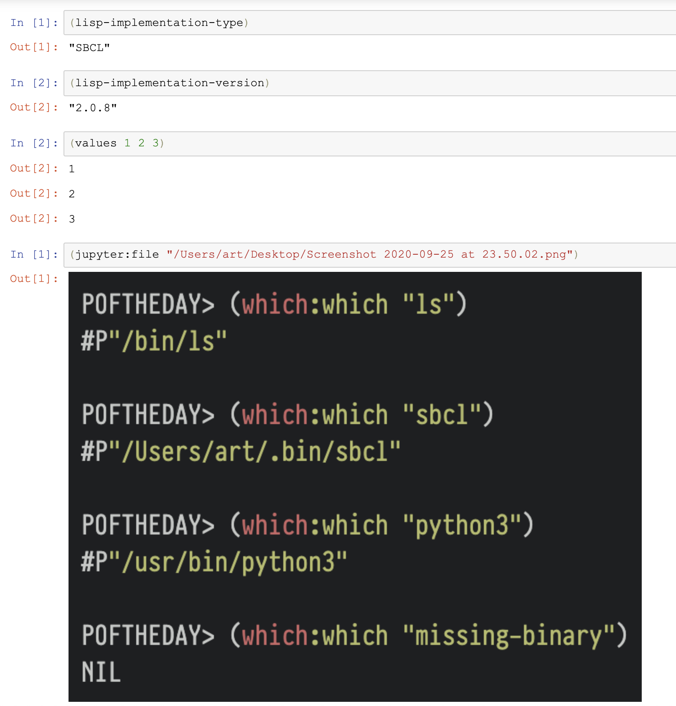

Lisp Project of the Day
common-lisp-jupyter
You can support this project by donating at:


Or see the list of project sponsors.
common-lisp-jupyter
| Documentation | 😀 |
| Docstrings | 😀 |
| Tests | 😀 |
| Examples | 😀 |
| RepositoryActivity | 🥺 |
| CI | 😀 |
This library provides a Common Lisp kernel for Jupyter.
Jupyter is a scientific environment for experiments. It is good when you want to play with data, to plot graphics and provides some comments in markdown.
Jupyter saves your programming session along with results in one file allowing to share your results with other programmers or analytics.
Maybe you didn't know, but GitHub is able to render such notebooks. Here I found a large list of interesting notebooks. Take a look at this one, for example:
https://github.com/mqlaql/geospatial-data/blob/master/Geospatial-Data-with-Python.ipynb
Now, let's return to the Common Lisp. Jupyter is using a protocol allowing to write backends in different programming languages. They are called "kernels".
Here is how we can install Common Lisp Jupyter kernel on OSX. I'm using Homebrew and Roswell because they are making everything so easy!
[poftheday] brew install zeromq
[poftheday] brew install jupyterlab
[poftheday] ros install common-lisp-jupyterNow we can start a notebook in console mode:
[poftheday] jupyter console --kernel=common-lisp
Jupyter console 6.2.0
common-lisp-jupyter: a Common Lisp Jupyter kernel
(C) 2019 Tarn Burton (MIT)
In [1]: (lisp-implementation-type)
Out[1]: "SBCL"
In [2]: (lisp-implementation-version)
Out[2]: "2.0.8"
In [3]: (values 1 2 3)
Out[3]: 1
Out[3]: 2
Out[3]: 3
In [4]: (jupyter:file "/Users/art/Desktop/Screenshot 2020-09-25 at 23.50.02.png")
Out[4]: /Users/art/Desktop/Screenshot 2020-09-25 at 23.50.02.pngAnd this command will start a webserver with full Jupyter Notebook:
# To start a web UI, run
[poftheday] jupyter notebookWhen the browser will open Jupyter, choose this menu to start Common Lisp Jupyter kernel:
Now if you enter the same code as we did before in console, you'll see, that web version is able to render our "screenshot" file below the "code cell":

It is also very easy to render formulas and to request an input from the user:
Also, you can render any HTML along with styles:
Or you might define functions which will return HTML or files:
This way, libraries extending common-lisp-jupyter may be created. They can do plotting for example, or render graphs, etc.
Here how you can make you own classes renderable by Jupyter:
Though, it would be nice to make it possible to define render method for object not inherited from the jupyter:result.
The developer of this library did a very good job documenting it and providing examples. You will find all of them here.
This project is in active development phase. For example, right now support for Jupyter widgets is added.
Please, join this effort and make your pull requests to this repository, if you are interested in building CL environment for data science!
Brought to you by 40Ants under